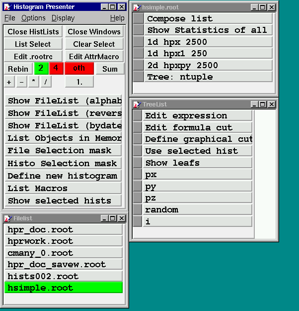
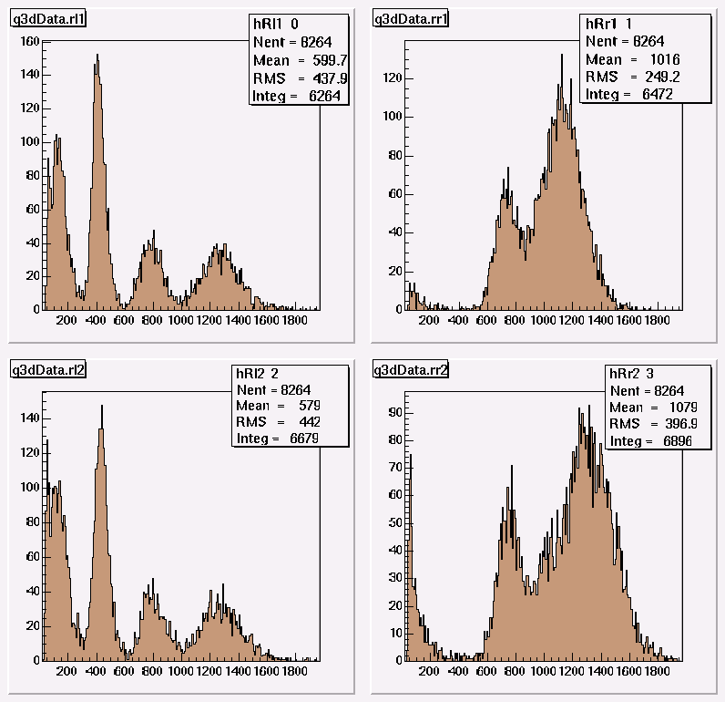
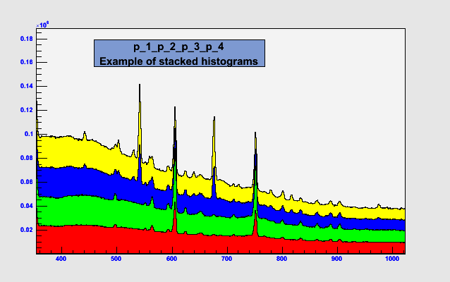

HistPresent start window
Operators
If two histograms (or more for Add)
are selected (Click grey button in Hist list) one can
perform the following operations:
+ Add: hist1 + factor*hist2
- Sub: hist1 - factor*hist2
* Mul: hist1 * factor*hist2
* Div: hist1 / (factor*hist2)
The resulting histograms are shown and stored in
memory with new names. Note that in this case the
order of selection is important.
If only 1 histogram is selected with operation
multiply then this gets scaled.
For operation Add any number of selections are
possible.
Rebin selected histogram
Rebin a selected histogram using the selected
(green) value. The new bin content may the sum or
average of the original bins.
A new histogram is created in memory which may be
accessed later by the command List Objects in Memory
Edit .rootrc
The content of .rootrc is described here
Show Filelist
Display a list of root files (.map, .root, .histlist) in
current working directory. Ordering may be done
alphabetically or by modification time.
If files in other directory are needed (symbolic) links
can be used.
The File popup menu provides an entry
Select ROOT file from any directory. This opens
a file selection dialog from which a ROOT file in any
directory may be choosen.
Tighter selection can be made by defining a FileSelectionMask.
Clicking on a file displays the contents
(histograms, trees , cuts).The gray square button on the
left side of the objects name is used to select the object
for operations like Rebin, Add etc. Selecting a cut in this
way makes it memory resident and can be used when displaying
trees and 2-dim histograms. The command Clear Select resets
all selections.
Subdirectories in ROOT files are supported. In the contents
list their entries are marked by Dir:
When a file contains many histograms it can be useful to have
lists with only a subset. Such a subset can be defined in a
file e.g. mysubset.histlist. (Note: The Extension .histlist
is compulsory.) It may contain the name of the file followed
by the name of the histogram to be selected (one per line)
separated by a space or only the name of the histogram.
All histograms in such a list may be displayed in one single
canvas allowing a quick overview on many histograms.
This list can be produced either by an editor or by
selecting the subset with HistPresent itself (i.e. pressing
the grey buttons left of the name) and then clicking on
Compose list.
A sample session is shown in the attached picture.
A note on names of objects:
To make full use of the extensions to C++ in CINT names of
objects should obey C++ naming rules. So only letters,
numbers and the underscore character should be used.
HistPresent itself is not protected against C++ constructs
in names like name(eee). It checks a root file for such
names and offers to create a new file (extension:_cor.root)
with all illegal characters replaced by underscores.

List Objects in Memory
List objects (histograms, cuts, windows) currently in memory
This is needed if new histograms are created by Rebin,
or arithmetic operations.
Hists from M_analyze
Histograms may be directly fetched from a running M_analyze
process via a socket connection to a local or remote
computer.
The convention on TcpIp port numbers used is as follows:
Online running M_analyze uses port 9090 for communication
with C_analyze and HistPresent. Offline processes use
port 9091 - 9095, maximum 5 processes are allowed
simultanously. The port number used is shown in the
C_analyze control window and printed during startup
of M_analyze.
Notes:
When invoking this command first time in a HistPresent
session hostaddress and port are requested. Next invocations
take the same values. I.e. hostaddress and port cannot be
altered in the same session.
At each invocation of the command the histogram list
and the current statistics are fetched from M_analyze
and the command list is build with these values.
Pressing on a histogram name will fetch a fresh copy
of the the histogram from M_analyze.
This also works for the automatic update when using
the command Show selected hists.
Caveat: Since histograms are gathered one by one the number
of entries will in general not reflect the same number of
events collected.
File/Histo Selection Mask
SelectionMasks may be defined using wildcard or regular
expression syntax. See Help_on_RegExp
Show selected hists
This command displays up to 25 selected histograms in one
single canvas. Selection is done by pressing the grey button
in a histogram list which should turn green. Selection may
be done from different lists.
Clicking into a histogram will display this with the normal
options as Fitting, Expanding etc.
In this canvas only the following operations are possible
(From the Display popup menu)
-
Show all as selected (Range only) or (Range, Min, Max)
First select a histogram with the middle mouse, then adjust
the desired range by moving the left mouse pressed in the
axis scale.
-
Calibrate all as selected
See Help_on_Calibration
-
Rebin all
Rebin all histograms with the same rebin value.
-
Activate automatic update
This is useful in an online environment. This option allows
to refresh the display of the histograms in regular intervals.
The refresh rate (AutoUpdateDelay) may be choosen from the
Option HistPresent numerical options.
Notes:
Zooming of the x-y axis is possible however these values will
not be remembered. To achieve this one should click
into the histogram to get the standard view with all options
and adjust the desired range.
To ease this operation for many histograms to be shown in the
same range the option Show Always All As First is provided.
In this case it is sufficient to adjust the range only for
the first histogram in a list.
An example is shown in the attached picture.
Example of Show selected histograms

Stack selected histograms
This command stacks the selected histograms in one plot.
I.e. the selected histograms are added channel by channel.
The regions belonging to the individual histograms are
colored differently. This function only makes sense for
1-dim or 2-dim histograms with the same number of channels.
The display range is taken from the first histogram selected.
For more info consult the ROOT documentation for the class
THStack.
Selection is done by pressing the grey button
in a histogram list which should turn green.
An example is shown in the attached picture.
Example of stacked histograms
